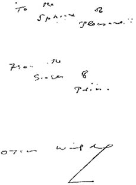

SEKİZİNCİ BASKI (MENTHUEN), 1910
THE BALLAD OF
READING GAOL
BY
OSCAR WILDE
METHUEN & CO. LTD.
36 ESSEX STREET W.C. LONDON
Foolscap 8vo ebadında kağıda baskı (6,5 inç x 4,25 inç); sayfalar: viii + 86; fiyatı 1 şilin
Tasnif: −− iç kapak, arkası boş, 1 yaprak; başlık sayfası, arkasında bibliyografya notları, 1 yaprak; İthaf, arkası boş, 1 yaprak; “Robert Ross, Reform Club, 25 Mayıs 1910” imzalı yazı, arkası boş, 1 yaprak; Reading Zindanı Baladı metni, 29 yaprak; Ek, arkası boş, 1 yaprak; iç kapak, arkası boş, 1 yaprak; “şiirin özgün taslağına dayanan” bir metin, 12 yaprak; mühür: “T. & A. Constable tarafından Edinburgh Üniversitesi Matbaası’nda basılmıştır”, arkası boş, 1 yaprak.
İki yan kâğıttan biri gri ambalaj ile kaplanmıştır. Ön kapakta şiirin ve şairin adı koyu mavi renkte altı satır halinde yazılmış durumdadır. Altında da Charles Ricketts tarafından hazırlanan ve De Profundis’in 1905’teki crown 8vo ebadında kâğıt kullanılan baskılarında kullanılan tasarımı bulunmaktadır. Arka kapakta şiirin adı ve kitabın fiyatı yer almakta, hemen iç tarafta da 1909’da çıkan “Oscar Wilde’ın Eserleri” adlı kitabın reklamı bulunmaktadır.
